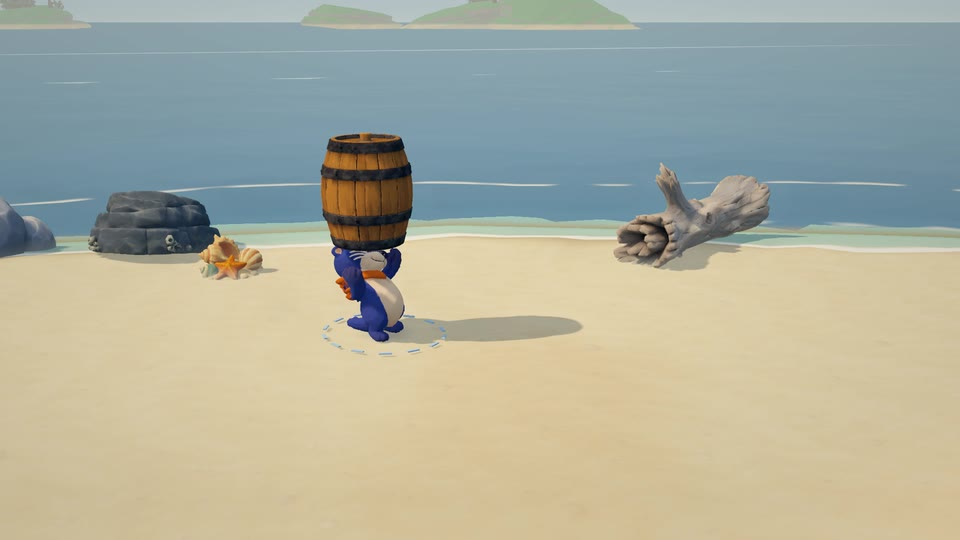

Steam page rehearsal · in development, not on saleSteam 商店页预演 · 开发中，没有在卖
Scrap Forge锻造之王

Trailer recorded in the game; the scenes between players are played by scripted seats.预告片在游戏里录制；玩家之间的场面由脚本操控的角色演出。
Not on sale. This page rehearses the store before there is one: no price, no wishlist, no reviews.还不能买。这一页是在有商店之前先把商店页排一遍：没有价格、没有愿望单、没有评测。
About this game关于这款游戏
You are an animal blacksmith about knee high, on a beach full of questionable materials.你是一只只到别人膝盖高的动物铁匠，海滩上堆满了来路不明的材料。
Make a weapon out of this?这也能打成武器？
Barrels, coconuts, rope, lanterns: whatever you fuse in decides what the sword grows into. A barrel and a lantern make a powder keg; a few grades later, a ship’s cannon.木桶、椰子、缆绳、灯笼：熔进什么，剑就往什么方向长。木桶加灯笼是火药桶，再敲高几级，就成了一门老舰炮。
One more strike?再敲一锤？
Every point you open on the anvil tells you how many flaws are next to it. Clear the board for a better sword, or hit a flaw and break it.铁砧上每敲开一点，就知道旁边藏着几处暗伤。把安全的点全敲开，剑就升一级；敲中暗伤，剑就碎了。
Fight with what you forged打出什么，就拿什么上场
Eight rival smiths, four in a run, then the Forge King. Bring up to three friends, or sabotage them and settle it when the bell rings.八位铁匠，一局遇到四位，最后是锻造之王。最多叫上三个朋友一起打，或者给他们使坏，钟响了再算账。
System requirements系统需求
- OS操作系统
- Windows 10 or 11, 64-bitWindows 10 / 11，64 位
- Minimum最低配置
- Not measured yet. The low picture level is meant for integrated graphics, but no such machine has run it.还没有实测。低画质是为集成显卡准备的，但还没有在这样的机器上跑过。
- Measured on实测机器
- Core i7-14700KF, RTX 4070 Ti SUPER, 1080p: 439–606 fpsCore i7-14700KF、RTX 4070 Ti SUPER、1080p：每秒 439–606 帧
- Storage存储空间
- About 1.4 GB, including the 0.5 GB language model约 1.4 GB，含 0.5 GB 语言模型
- Network网络
- Only for playing with others只有联机才需要
AI generated content disclosureAI 生成内容说明
Before you play. The 3D models begin as generated concept pictures turned into meshes with Tripo, then are cut down, retextured and rigged by script. Icons and story pictures are generated and reduced to one palette. Most sound effects and the music are generated with ElevenLabs. The code and the text are written by coding agents (Claude Code, Codex) to my direction.你玩之前。3D 模型先生成概念图，再用 Tripo 转成网格，然后由脚本减面、重做贴图、绑骨。图标和剧情插画是生成的图片，再压到同一套色板上。大部分音效和音乐由 ElevenLabs 生成。代码和文本由编程代理（Claude Code、Codex）按我的要求写成。
While you play. A small language model on your own processor names swords fused from three or more things, inside a fixed format. It cannot set a number or write free text.你玩的时候。熔进三件以上东西的剑，由跑在你自己处理器上的小语言模型按固定格式起名。它不能设定数值，也不能随意写字。
Not AI. The rules, the numbers, the 231 weapon designs, every animation and the forging sounds.不是 AI。规则、数值、231 种武器的设计、所有动画和打铁的声音。